00读前一分钟 · 全文脉络与本篇性格
把五句里的代词逐个圈出来：
46 They sometimes travel …（大象这一物种，承前句主语）· even when they are out of sight（其他大象——破折号后的 they 管的是前面宾语从句的主语 other elephants）
47 where they are · the resources they need（两个都是 the elephants，不是 researchers）
48 that they merely used their eyes · the plants they found · but that would … · their eyesight（同一句里两个 that 身份不同：前一个是表语从句引导词、不译；后一个是指示代词，指「只靠眼睛找」这件事，译「这」）
49 and they are very characteristic（化学物质，不是离得更近的 plants）· its own（each plant or tree）
⟹ 动作：每圈一个代词，就在旁边写一个汉字——「象／它／物／这」。凡是两个候选都是复数的，问两件事：① 这句的主角是谁（主语核心词）？② 冒号、破折号后面那半句在解释谁？ 46 与 49 的第二个 they 不能都译「它们」——黄皮书 46 难点 (2) 原话：两个指代词不宜都处理为「它们」，而应有所区分。
travel 人「旅行」、象「跋涉」· working out 人「算出」、象「判断出」· take shortcuts「抄近道」· following familiar routes「走熟路」· tried out the plants「试吃」· ④❶ choosy eaters「挑食」· ⑥❶ foraging「觅食」
⟹ 检查一句：译文里有没有「旅行」「计算」「试用」「占据」？大象不会做这些事。
其余是送分的：46 是「谓语 1 and 谓语 2 ＋ 破折号让步」；49 是三个分句、过去分词后置定语前置成「植物释放的」；50 的定语从句 that are good to eat 短，前置成「适合食用的」。
① 2019 翻译立过「数定指代」（which 挂 nonsense 还是 journals，看 generates 带不带 -s）；2016 翻译「小词」清单里有一格「指代与一致」（they ＝ others、allow 无 -s 说明两个主语）——两年都是靠单复数破案。2024 把这一格单独拎出来成了一整篇，而且专挑单复数一致的：候选全是复数，只能看主次与语义。
② 2020 翻译立过「态」六处对照（被动转主动）；本篇四处 be＋过去分词，画线内两处、②❶ 一处都不用「被」，只有⑤❷ 留了——是那张表的续篇。
③ 2011 翻译「心智是编织大师」讲人的心智塑造性格，本篇末句讲海马体与认知地图——同一条脑科学线，一个讲「想」，一个讲「认路」。
④ 同卷：T4 切萨皮克湾讲的正是②❷ 清单里的 wetlands（湿地是栖息地）；T2 狩猎采集者（forager）与⑥❶ foraging「觅食」同根；完形《自动门》靠传感器「感应」人，本篇大象靠鼻子「感应」食物——一张卷子两篇在讲「感知」。
01原文精读
📄 原文是你的浏览器从原卷第 13 页识别出来的文字，下划线就是原卷的画线——考的只有带下划线的五段，淡蓝底的五句点一下跳到 02 节五步精讲；
蓝色虚线句点一下跳到 05 节长难句精析 ｜ 🟡 黄色虚线词 ＝ 重难点，点开右侧出卡片 ｜ 选中任意其他单词浮出「查有道」 ｜
每段「意」＝ 本页自写的意译（按句意转述，不是参考答案）｜「原卷对照」逐句看扫描原图、改识别错字。
⚠️ 先把五句在纸上写完再往下翻——上下文的用处是给代词定人：②❷ 的 They move 告诉你 46 句首的 They 还是「大象这个物种」；②❻ 的 they almost always seem 一路下来都是大象，所以 47 的两个 they 不会是 researchers；⑤❷ 的 they can be detected（能被闻到的只能是气味物质）回头替 49 的 they 作证——49 的 they 是化学物质，不是植物。
① 引子：一句老话 ＋ 两个破折号
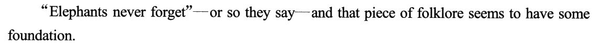
② 现象：分布 → 栖息地 → 走得远、认得清（46）→ 追踪证据 → 方向准 → 挑最近的 → 研究者的结论（47）
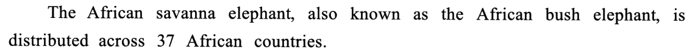
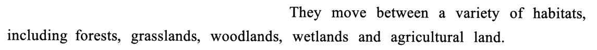
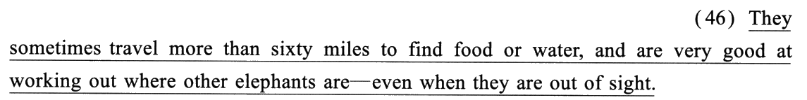
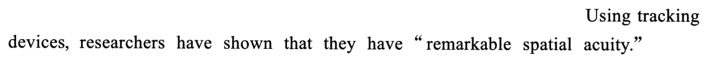
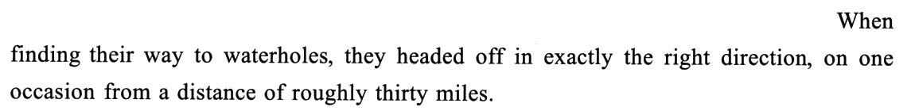
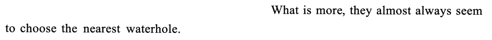
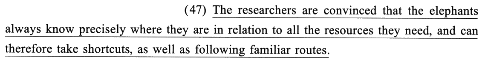
③ 过渡：靠什么认路还不清楚 → 嗅觉很可能有份（全文转向「鼻子」）
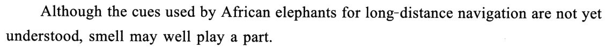
④ 问题：挑食却不知道怎么挑 → 「只靠眼睛」这个可能被否掉（48）
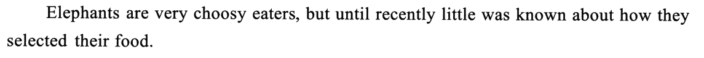
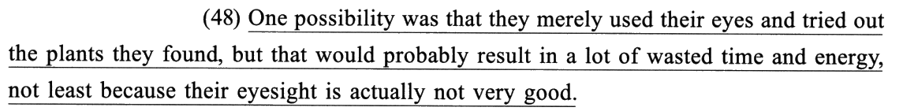
⑤ 答案：气味——飘得远、有特征（49）→ 看不见也闻得到 → 新研究：嗅觉是关键
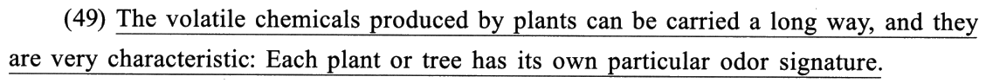
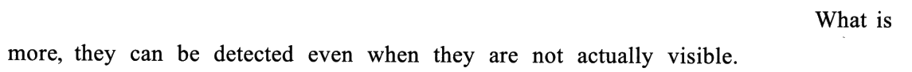
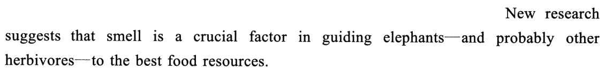
⑥ 证据：先摸清口味 → 「食物站」只凭气味选 → 实验结论（50）→ 推到野外
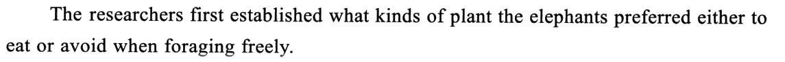
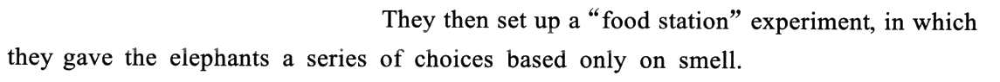
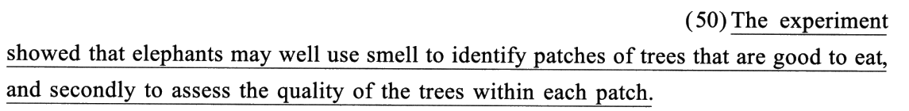
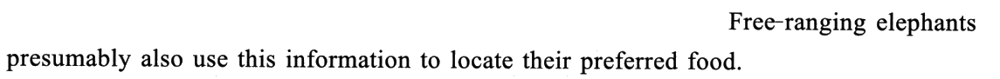
⑦ 收尾：机制落到大脑——海马体与认知地图（呼应章名「人类的导航大脑」）
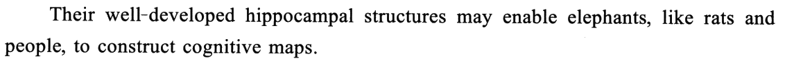
02逐句五步精讲 · 切分 → 初译 → 难点 → 词义 → 导出
每句五个标签页按考场上真实的动作顺序排；下方采分点逐个自评（点一次「得分」、再点一次「丢分」），
右上角实时结算本句得分，本页总分见下。参考译文默认折叠——先写完再翻。
📐 本年五句切 17 个采分块：14 个 0.5 分块 ＋ 3 个 1 分块（2023 是 16 块 ＝ 12 × 0.5 ＋ 4 × 1）。46 是「0.5 ＋ 1 ＋ 0.5」，47 是「1 ＋ 0.5 ＋ 0.5」，48、50 都是「0.5 × 4」，49 是「1 ＋ 0.5 ＋ 0.5」。三个 1 分块各压着一样东西：46 中块压 working out 的词义与 where 从句名词化、47 首块压 convinced／precisely／in relation to 三个词、49 首块压 volatile、后置定语与被动三件事。
⭐ 代词压着 3 块 1.5 分：46 末块（第二个 they ＝ 其他大象）· 48 第三块（but that ＝ 这）· 49 第二块（they ＝ 化学物质）。
采分块的英文按结构关节用「｜」隔开（完整原句见每句上方的原卷句条）。「② 初译」页引自黄皮书的「初译试水」——本篇书上的初译几乎每句都留着一个「人的动词」或一个直译的被动（旅行 · 计算出 · 被说服 · 被携带），正好当反面教材；「⑤ 导出」页与折叠的参考译文以黄皮书为准。
切分眼：where 不是地点状语——它前面的 working out 是及物的「弄清、判断出」，缺宾语，where other elephants are 整块就是那个宾语。
⚠️ 破折号后的 they 往回找谁：离它最近的复数名词是 other elephants，而且「看不见」只能说别的大象（自己总看得见自己）⟹ they ＝ 其他大象。
📐 三块 0.5／1／0.5：「谓语 1 ＋ 目的」一块 · 「谓语 2 ＋ 宾从」一块（1 分：词义 ＋ 名词化两件事）· 「让步」一块（压第二个 they）。
这份初译是黄皮书自己的「试水稿」：结构全对，丢分全在「人的动词」和「它们」上——正是本篇两个性格。
- ⭐⭐ 两个代词不能都写「它们」：句首 They ＝ 非洲草原象这一物种；破折号后的 they ＝ 其他大象。 📕 难点 (2)：前者处于句首，承前指代 The African savanna elephant 这一物种；后者居于破折号后，其所属部分为谓语部分 2 的解释说明内容，故应指代谓语部分 2 中宾语从句的主语 other elephants ⟹ 后者处理为「其他／那些大象」。
- ⭐ where 宾语从句短，名词化：「其他大象的位置」。 📕 难点 (1)：where 从句不是地点状语而是 working out 的宾语，且相对简短 ⟹ 译为名词性短语。「判断出其他大象在哪里」意思也对，但「确定其他大象的位置」更紧。
- even when 让步：「即便……」；out of sight 固定表达「不在视野中」。 📕 难点 (3)：even when 引出看似被排除在外、实际包含在内的情况，近似固定搭配「即使当／在……时」⟹「即便那些大象不在它们的视野中」。
- 目的状语提前：「为找到食物或水，它们有时……」。 📕 导出把 to find food or water 提到句首——中文先说目的、再说动作。放后面写「……走六十多英里去找食物或水」也通，不扣分。
- travel —— 📕 常用以表达（人）旅行、游历，此处描述的对象是大象 ⟹「跋涉；行进」。误译栏：「旅行；游历」。
- working out —— 📕 本义「计算；算出」，强调经计算得出准确结果，可引申为「找出……的答案；解决（某问题）」；宾语是位置（where）⟹ 灵活译「（精确）判断／确定……的位置」。误译栏：「计算出；产出」。
- be very good at —— 「非常善于／很擅长」，后接动名词。
- out of sight —— 固定表达「在视野之外；看不见」。反义 in sight「在视野之内」。
- more than sixty miles —— 「六十多英里」，中文「多」放在数字后；约 97 公里，不必换算。
| 疑难点 | 正译 | 误译 |
|---|---|---|
| travel | 跋涉；行走 | 旅行；游历 |
| working out | （精确）判断／确定 | 计算出；产出 |
为找到食物或水，它们有时跋涉六十多英里，而且它们非常善于确定其他大象的位置，即便那些大象不在它们的视野中。
导出动作三个：① 两个 they 分开：句首「它们」、末尾「那些大象」；② 两个动词换成大象的动作：跋涉 · 确定位置；③ where 从句名词化：「其他大象的位置」。
检查一句：译文末尾的主语写的是「它们」还是「那些大象」？写「它们」，读者就会读成「大象自己看不见自己」。
🧪 Claude 盲译：它们有时会跋涉六十多英里去找食物或水，而且非常善于判断出其他大象在哪里——即使那些大象不在视线之内。
切分眼：are convinced 不是被动——convinced 是表语形容词「确信的」，和 be sure／aware／afraid that 一样，后面的 that 从句相当于宾语。
⚠️ 两个 they 都是 the elephants：know 的主语是大象，where they are 是「大象自己在哪」；resources they need 是「大象需要的资源」——不是研究者。
⚠️ as well as 后面接动名词（following），它是介词，不是连接两个谓语的 and。
📐 三块 1／0.5／0.5：首块一口气装了 convinced、precisely、in relation to 三个词——1 分；后两块各半分，压在 take 与 following 两个「走路」的动词上。
好在 as well as 的顺序初译就倒对了（「除了……之外，还……」）——这是本句唯一不用改的一处。
- ⭐⭐ be convinced that：「确信／坚信」，不是「被说服」。 📕 难点 (1)：某些表示主观判断与感受的表语形容词（afraid、aware、sure 等）后可接 that 引导的名词性从句，意义上相当于「动词＋宾语从句」；convinced 为表语形容词「确信的；坚信的」，而非表达被动意义 ⟹「坚信／确信……」。
- ⭐ precisely 是焦点副词，强调 where 从句：「确切／精确（的位置）」或移位「精确地（知道……位置）」。 📕 难点 (2)：precisely 相当于 exactly，对 where 从句起强调作用，以凸显定位的准确性。导出选了移位：「精确地知道」。
- ⭐ A as well as B：强调 A ⟹「除了 B 之外，还 A」——中文顺序与英文相反。 📕 难点 (3)：走熟路（B）相较抄近道（A）难度系数更小，整体译作「除了能走熟路，还能抄近道」。写成「能抄近道，也能走熟路」意思对、重心丢了——「抄近道」才是 47 要证明的本事（②❻ 刚说过它们总挑最近的水坑）。
- 「它们与自己所需要的一切资源的相对位置」：where 从句同样名词化。 与 46 是同一个动作：where ＋ 主系表 的短从句，落成「……的位置」，in relation to 让它变成「相对位置」。
- in relation to —— 📕 既可指「关于；涉及（某事物）」（如 latest developments in relation to the disease「这种疾病的最新进展」），又可指「相对于……而言」（显示两者的联系或比较）；句中描述大象（A）与所需资源（B）的位置对应关系 ⟹ 取第二义「A 相对于 B 的位置」或「A 与 B 的相对位置」。
- take ／ following —— 📕 两个常见多义词经 as well as 相连，且都与路径词（shortcuts、routes）搭配 ⟹ 对仗译「走捷径／抄近道」「走熟路」。
- therefore —— 「因此」，夹在 can 和 take 之间，中文提到最前：「因此除了……还能……」。
- resources —— 「资源」：上文的食物、水、水坑都是。
| 疑难点 | 正译 | 误译 |
|---|---|---|
| are convinced | 确信；相信 | 被说服；被劝说 |
| take shortcuts | 走捷径；抄近道 | 占据捷径；拥有捷径 |
| following familiar routes | 走熟路；沿着熟悉的路线走 | 跟随熟悉的路线；听从熟悉的路线 |
研究人员确信，大象总能精确地知道它们与自己所需要的一切资源的相对位置，因此除了能走熟路，还能抄近道。
导出动作三个：① convinced 落「确信」，不加「被」；② where 从句落「相对位置」，precisely 移到动词前「精确地知道」；③ as well as 倒序：先熟路、后近道。
检查一句：句子里有没有「被」字？有，就是首块那 1 分悬了。
🧪 Claude 盲译：研究人员确信，大象总是确切地知道自己相对于所需的一切资源处在什么位置，因此除了沿熟悉的路线走以外，还能抄近道。
切分眼：一句里两个 that——第一个在 was 后面，引出表语从句，本身不当成分、不译；第二个在 but 后面、紧跟 would，它就是主语，指前面说的那种做法。
⚠️ 五个代词全是大象一方：they × 2、their × 2 都是大象；but that 是那件事。
⚠️ merely 管两个谓语：只用眼睛（不用鼻子）去找、去尝——它在给⑤段的「气味」让位置。
📐 四块各 0.5：分句 1 主干 · 表语从句 · 分句 2 · 原因从句——结构的每一节一块。全文最长的一句（39 词），却是切得最均匀的一句。
本句初译的「尤其是因为」恰好就在黄皮书疑难表的正译栏里——导出改成「相当重要的原因是」是风格，不是纠错。
- ⭐⭐ 引导词 that 与指代词 that 混用：前者不译，后者译「这／这种情况」。 📕 难点 (1)：句子难在引导词 that、指代词 that 混合使用。前者为表语从句的引导词，在从句中不充当语法成分；后者为代词，承前指代表语从句所述情况 ⟹「这／这种情况」。
- ⭐ 两个并列谓语补出动作：「用／靠眼睛来寻找／寻觅并试吃所找到的植物」。 📕 难点 (2)：used their eyes 意指「利用眼睛（来寻找／寻觅食物）」，tried out the plants they found 意指「尝试／试吃它们所找到的植物」——「寻找」是增译，英文没写 find，但下一个分句 the plants they found 已经说了。
- result in 不直译：「可能会浪费大量的时间和精力」。 📕 难点 (3)：字面含义为「可能会产生大量浪费掉的时间和精力」，可根据汉语表达习惯意译。名词短语 wasted time and energy 落成动宾「浪费……时间和精力」。
- possibility —— 📕 本义「可能；可能性」，此处承前「对大象如何挑选食物不够了解」，指其中一种猜想／可能正确的解释 ⟹「可能」。注意 One possibility was …（过去时）——这个猜想后文被否掉了。
- tried out —— 📕 本义「试用；测试」，结合上句 choosy eaters「挑食的人／动物」、selected their food「挑选食物」及宾语 the plants（大象的食物）⟹ 意译「试吃」。误译栏：「试图；设法」——那是 try to do。
- not least —— 📕 固定搭配「尤其是；相当重要地是」，not＋least 的双重否定意味加强语气、表强调 ⟹ 强调原因可译「相当重要的（原因）是」。⚠️ 与 not the least（一点也不；完全不）区别：多一个 the，意思反过来。误译栏：「完全不是因为」。
- merely —— 「只；仅仅」，强调手段单一。
- eyesight —— 「视力」；actually not very good「其实并不怎么好」，actually 是「其实」，不是「实际上地」。
| 疑难点 | 正译 | 误译 |
|---|---|---|
| tried out | 尝试；试吃 | 试图；设法 |
| not least because | 尤其是因为；相当重要的（原因）是 | 完全不是因为 |
一种可能是，它们只用眼睛寻找并试吃所找到的植物，但这很可能会浪费大量的时间和精力，相当重要的原因是它们的视力其实并不怎么好。
导出动作三个：① 两个 that 分家：第一个不译，第二个落「这」；② 补出动作：用眼睛「寻找」、植物「试吃」；③ not least 落「相当重要的原因是／尤其是因为」。
检查一句：「not least」那里写的是肯定的「尤其是」，还是否定的「完全不是」？写反了，整句的逻辑就倒了。
🧪 Claude 盲译：一种可能是它们只是用眼睛看，再把找到的植物尝一尝，但那样很可能会浪费大量的时间和精力，尤其是因为它们的视力其实并不太好。
切分眼：they 前面有两个复数名词——chemicals 和 plants，plants 离得更近。单复数帮不了你，两个判据：① chemicals 是分句 1 的主语核心词，plants 只在修饰成分 produced by plants 里；② 冒号后说「每种植物都有自己的气味」——说的是气味（化学物质）有特点。
⚠️ Each … its：each 后单数，its 指 each plant or tree，没有悬念。
📐 三块 1／0.5／0.5：首块 1 分装着 volatile 的词义、produced by 的位置、can be carried 的态——三件事；第二块半分只压一个 they。
四处翻车，一处结构问题都没有——全是词义与态。这句的结构在五句里最简单，丢分却可能最多。
- ⭐⭐ they 不「就近指代」：指 chemicals，译「它们／这些物质」。 📕 难点 (2)：they 前有两个复数名词 chemicals 和 plants，但此处并非「就近指代」。判断线索有二：一、全句重点描述的对象为分句 1 的主语（核心词 chemicals），而 plants 位于次要的修饰成分中；二、冒号后内容是对分句 2 的整体解释，说明植物／树木散发的挥发性物质所带来的特定气味 ⟹ they 指向挥发性化学物质。
- ⭐ 被动转主动，后置定语前置成「的」字结构：「植物释放的挥发性化学物质能播散到……」。 📕 难点 (1)：被动语态实际可转为汉语中比较常见的主动语态；过去分词短语作后置定语译作「的」字短语置于核心名词之前。导出把 produced 落成「释放」。
- 分句 2 意译：「它们特点鲜明」。 📕 难点 (3)：主系表结构直接顺译为「它们是非常典型的／独特的」，与后文语义脱节，可结合后文语义重心转译为「它们特点鲜明」。
- volatile —— 📕 常见义「易变的；不稳定的」，此处据修饰对象 chemicals 及后文 odor 不难判断应取引申义「易挥发的／挥发性的」。（a volatile market 才是「动荡的市场」。）
- carry —— 📕 本义「携带；传送」，被动 be carried 说明挥发性化学物质／气味被（空气、风等）传送 ⟹ 意译「播散／扩散」；can be carried a long way ⟹「可以播散／扩散很远的距离」。
- signature —— 📕 本义「签名；署名」，还可引申为「（人或物的）识别标志；明显特征」；characteristic、its own particular 都在强调独特 ⟹ 译为「标志」。导出把 odor signature 调成「标志性气味」。
- characteristic —— 这里是形容词「有特色的」，不是名词「特征」——看它前面的 very。
- its own particular —— own 与 particular 两层强调「自己的、独有的」⟹「其特有的」。
| 疑难点 | 正译 | 误译 |
|---|---|---|
| volatile chemicals | 挥发性化学物质 | 易变的化学制品 |
| can be carried a long way | 可以播散／扩散很远的距离 | 可以被携带很远的距离 |
植物释放的挥发性化学物质能播散到很远的地方，而且它们特点鲜明：每一种植物或树木都有其特有的标志性气味。
导出动作三个：① 态：被携带 → 能播散；② 定语前置：植物释放的；③ 四个词换义：挥发性 · 播散 · 特点鲜明 · 标志性气味。
检查一句：「它们特点鲜明」的「它们」，读者会读成植物还是化学物质？如果怕读岔，写「这些物质」最稳。
🧪 Claude 盲译：植物产生的挥发性化学物质能传播很远，而且极具特色：每种植物或树木都有自己独特的气味标记。
切分眼：两个 to 是一层的（都挂在 use smell 上），和 2023·46 那两个 to 分两层不一样——这里用 and secondly 把它们排成先后两步。
⚠️ secondly 前面没有 firstly：英文只标了第二步，中文要在第一步前补「先」。
⚠️ good to eat 不是「好吃」的字面——be good to do「适合做某事」，说的是「能吃、值得吃」。
📐 四块各 0.5：showed · that 从句主干 · 目的 1＋定从 · 目的 2——和 48 一样一节一块。本句是五句里唯一没有代词的，主语直接写 elephants。
这份初译结构没错，丢的是「顺序」与「前后一致」——两个都是中文一侧的毛病。
- ⭐⭐ secondly：据前后两个不定式处理为「（先……，）接着……」。 📕 难点：最大难点在于定语从句中 are good to eat 以及序列词 secondly 的译法——后者字面义为「第二；其次」，宜根据其前后的两个不定式短语处理为「（先……，）接着……」。「先」是增译，英文里没有 first。
- ⭐ 定从视长短处理：短的前置成「的」字结构——「适合食用的那些树林」。 📕 难点：宾语从句以及目的状语通常按照正常语序译出即可，而定语从句需视长短而处理为「的」字结构或者小句。are good to eat 的核心是 be good to do sth 结构，表示「适合做某事」。
- may well 选「很可能」：陈述实验结果。 📕 词义 (1)：may well 为固定词组，既表「很可能」，也表「完全可以」，鉴于句中用以陈述实验结果，故宜选用「很可能」。③❶ 的 smell may well play a part 也是这个意思——③段的猜测，⑥段用实验坐实到「很可能」。
- patch —— 📕 本义「小块；小片」，与 trees 搭配表示由茂密树木覆盖的小片区域 ⟹ patches of trees「树林／树丛」，each patch「每片树林／树丛」。
- identify —— 「识别；认出」：从一堆里认出是哪几片。
- assess —— 「评估；鉴别」：已经认出的那几片里，再看每棵树的好坏。identify 是「是不是」，assess 是「好不好」——两步的分工就在这两个动词上。
- quality —— 「质量；品质」，导出用「品质」。
- may well —— 「很可能」；别跟 may as well（不妨）混。
| 疑难点 | 正译 | 误译 |
|---|---|---|
| may well use | 很可能利用 | 可能熟练地使用 |
| trees within each patch | 每片树林／树丛中的树木 | 树木的每一块 |
实验表明，大象很可能利用嗅觉先识别出适合食用的那些树林，接着再鉴别每片树林中树木的品质。
导出动作三个：① 补「先」、secondly 落「接着再」；② 定从前置：适合食用的那些树林；③ 量词前后一致：树林 → 每片树林。
检查一句：两步之间是「并」还是「先……接着……」？写「并」，第四块的 secondly 就没译。
🧪 Claude 盲译：实验表明，大象很可能是用嗅觉先辨认出哪些树丛好吃，其次再评估每片树丛里树木的质量。
03⚠️ 本篇内核：「谁是 they」与「大象的动作」清算表（50 处）
黄皮书五张「正译 vs 误译」表（11 行）＋ 五节「难点突破／词义确定」＋ 段落对照译文里的关键词全部收进——49 行的「正译」全部能在书上找到出处（判据栏标 📕：疑难表／难点／词义／导出／段落对照译文）；「误译」栏书上没列的格子，是本页补的最常见错法。
点「默写模式」把「正译」栏盖住，逐格点开自查。
⚠️ 这张表有两种行：代词行（「它们」写给谁）和动词行（人的动作换成象的动作）。前者错了是意思错，后者错了是「中文没人这么说」——两种都扣分。
📌 本表最值得记的一组：What is more 一词两译——②❻ 书译「更重要的是」、⑤❷ 书译「另外」：前一处是递进（挑最近的水坑比方向准更难），后一处只是补充（看不见也闻得到）。同一个连接词，译法看它连着的两件事谁重谁轻。
| 词／表达 | 正译（本文语境） | 误译（最常见） | 判据 |
|---|---|---|---|
| travel | 跋涉；行走 | 旅行；游历 | 46 📕 疑难表：描述的对象是大象 |
| working out | （精确）判断／确定 | 计算出；产出 | 46 📕 疑难表 |
| They（46 句首） | 它们（非洲草原象这一物种） | 他们 | 46 📕 难点 (2)：承前指物种 |
| they（46 破折号后） | 那些大象；其他大象 | 它们（读成大象自己） | 46 📕 难点 (2)：指宾从主语 other elephants |
| where other elephants are | 其他大象的位置 | 在其他大象在的地方 | 46 📕 难点 (1)：宾从短，名词化 |
| even when … out of sight | 即便……不在视野中 | 甚至当……视力之外 | 46 📕 难点 (3) |
| are convinced | 确信；相信 | 被说服；被劝说 | 47 📕 疑难表：表语形容词，非被动 |
| precisely | 精确地（知道）；确切的（位置） | 精密地；恰好 | 47 📕 难点 (2)：焦点副词 |
| in relation to | 相对于……而言；与……的相对位置 | 关于；涉及 | 47 📕 词义 (1)：取第二义 |
| where they are（47） | 它们（大象）的位置 | 他们（研究人员）在哪 | 47 主语是 the elephants |
| take shortcuts | 走捷径；抄近道 | 占据捷径；拥有捷径 | 47 📕 疑难表 |
| following familiar routes | 走熟路；沿着熟悉的路线走 | 跟随熟悉的路线；听从熟悉的路线 | 47 📕 疑难表 |
| A as well as B | 除了 B 之外，还 A | A 以及 B（重心丢失） | 47 📕 难点 (3)：强调 A |
| possibility | （一种）可能 | 可能性很大 | 48 📕 词义 (1)：一种猜想 |
| used their eyes | 用眼睛寻找 | 利用眼睛（不知干什么） | 48 📕 难点 (2)：增译「寻找」 |
| tried out | 尝试；试吃 | 试图；设法 | 48 📕 疑难表 |
| but that（48） | 这；这种情况 | 但是（当连词，丢了主语） | 48 📕 难点 (1)：指示代词 |
| result in … wasted time and energy | 浪费大量的时间和精力 | 产生大量白费的时间和精力 | 48 📕 难点 (3)：意译 |
| not least because | 尤其是因为；相当重要的（原因）是 | 完全不是因为 | 48 📕 疑难表；≠ not the least |
| volatile chemicals | 挥发性化学物质 | 易变的化学制品 | 49 📕 疑难表 |
| produced by plants | 植物释放的 | 被植物生产的 | 49 📕 导出：后置定语前置 |
| can be carried a long way | 可以播散／扩散很远的距离 | 可以被携带很远的距离 | 49 📕 疑难表 |
| they（49） | 它们；这些物质 | 这些植物 | 49 📕 难点 (2)：不就近指代 |
| very characteristic | 特点鲜明 | 非常典型的 | 49 📕 难点 (3)：重心转译 |
| odor signature | 标志性气味；气味标志 | 气味签名 | 49 📕 词义 (3) |
| may well use | 很可能利用 | 可能熟练地使用 | 50 📕 疑难表 |
| patches of trees | 树林；树丛 | 成片树木；补丁 | 50 📕 词义 (2) |
| trees within each patch | 每片树林／树丛中的树木 | 树木的每一块 | 50 📕 疑难表 |
| good to eat | 适合食用 | 好的去吃 | 50 📕 难点：be good to do |
| secondly | （先……，）接着…… | 第二；并且 | 50 📕 难点：补「先」 |
| assess the quality | 鉴别……的品质 | 估税；评定价格 | 50 📕 导出 |
| or so they say | 据说如此 | 或者他们这么说 | ①❶ 📕 段落译文 |
| piece of folklore | （这句）谚语；民间说法 | 一片民俗 | ①❶ 📕 段落译文「这句谚语」 |
| foundation | 依据 | 基金会；地基 | ①❶ 📕 段落译文「一定的依据」 |
| is distributed across | 分布于 | 被分配到 | ②❶ 📕 段落译文 |
| spatial acuity | 空间敏锐度 | 空间尖锐度 | ②❹ 📕 段落译文「非凡的空间敏锐度」 |
| headed off | （朝……方向）前进 | 拦截；阻止 | ②❺ 📕 段落译文「精准地朝着正确的方向前进」 |
| What is more（②❻） | 更重要的是 | 什么是更多的 | ②❻ 📕 段落译文：递进 |
| What is more（⑤❷） | 另外 | 更重要的是（过重） | ⑤❷ 📕 段落译文：补充 |
| cues | 线索 | 提示；台词 | ③❶ 📕 段落译文 |
| may well play a part | 很可能起了作用 | 可以很好地扮演角色 | ③❶ 📕 段落译文 |
| choosy eaters | 对食物非常挑剔 | 选择的吃家 | ④❶ 📕 段落译文 |
| crucial factor | 关键因素 | 十字形的因素 | ⑤❸ 📕 段落译文 |
| herbivores | 食草动物 | 草药师 | ⑤❸ 📕 段落译文 |
| foraging freely | （大范围地）自由觅食 | 自由地搜刮 | ⑥❶ 📕 段落译文 |
| based only on smell | 只能根据嗅觉来辨别 | 只建立在气味上 | ⑥❷ 📕 段落译文 |
| Free-ranging elephants | 野生大象 | 自由放养的大象 | ⑥❹ 📕 段落译文 |
| presumably | 很可能；想必 | 推定地 | ⑥❹ 📕 段落译文「很可能也是」 |
| hippocampal structures | 海马结构 | 河马的结构 | ⑦❶ 📕 段落译文：hippocampus ≠ hippopotamus |
| cognitive maps | 认知地图 | 认识的地图 | ⑦❶ 📕 段落译文 |
04考场流程：翻译五步法（20 分钟怎么花）＋ 盲译对照
- 通读全文 ＋ 定主角（2 分钟）—— 七段读一遍，给每一段标主语：①② 大象 · ③④ 大象 · ⑤ 化学物质／嗅觉 · ⑥ 研究者→大象 · ⑦ 海马体。⑤段的主语换了，49 的 they 就该往化学物质上想。 这一步多花 20 秒，在草稿纸角上写「象／物」两个字，后面每个 they 都先对着它问一遍。
- 结构切分（顺手圈代词）—— 先找谓语动词定主干，同时把 they／their／that／its 全部圈出来。本篇五句共 11 个代词，48 一句就占 5 个。 结构本身不难：46 两个谓语、47 宾从套宾从、48 表从＋两个 that、49 三个分句、50 两个目的不定式。
- 初译试水（每句 45 秒）—— 按块直译。每个代词先写成括号里的名词：「（其他大象）不在视野中」「（化学物质）特点鲜明」——导出时再决定写「它们」还是写名词。
- 词义确定（每句 1 分钟）—— 专查动词：travel · working out · take · following · tried out · carried · identify／assess。判据只有一条：大象能做这件事吗？（会旅行、会计算、会占据吗？）
- 译文导出（每句 45 秒）—— 46 末尾写「那些大象」；47 去「被」、as well as 倒序；48 第二个 that 落「这」；49 they 落「它们／这些物质」、被动转主动；50 补「先」。
剩下两把刀：① 主角刀——候选里谁是句子主语的核心词（49 的 chemicals 是主语，plants 只在 by 短语里）；② 解释刀——冒号、破折号后面那半句在说谁（49 冒号后说气味，46 破折号后说「看不见」——只能是别的大象）。
⟹ 动作：遇到 they，先数候选；只有一个复数就放心写「它们」，有两个就动用两把刀，然后把名词写出来（「那些大象」「这些物质」），别留「它们」让阅卷人猜。
黄皮书 46 词义 (1) 的判据原话就是「此处其描述的对象是大象」——主语一换，动词跟着换。
⟹ 动作：译完每句，把主语和动词单独连起来念一遍：「大象旅行」「大象计算」——念着别扭，就是要换词的地方。
同理 47 的 as well as：英文把重的放前面，中文「除了……还……」把重的放后面。
⟹ 动作：凡是英文用一个小词标顺序或轻重（secondly · as well as · not least），中文都要问一句：另一头要不要补一个字？
① 46 写「判断出其他大象在哪里」——working out 的义项对（📕 正译栏「判断」），where 从句没名词化；按黄皮书难点 (1) 的口径，「其他大象的位置」更紧，不扣分；
② 48 写「只是用眼睛看」——书解为「用眼睛寻找」（难点 (2) 增译），「看」意思不错但没点出动作目的；
另：49 省掉了分句 2 的主语（「而且极具特色」），指代没有写错，但省掉等于让阅卷人自己去猜——按本页第 1 条，写出「它们」更稳；50 写「哪些树丛好吃」＝ 把定从改成了宾语从句，意思等价。
盲译犹豫过的五处（mine 里照实写了）：48 tried out 取「尝一尝」还是「试吃」、49 odor signature 取「标记」还是「特征」——书分别取「试吃」「标志性气味」；其余三处（in relation to、as well as、secondly）与书一致。
商榷 2 · What is more 一词两译（见 03 表）——不是书的错，是书在按轻重落词；但书没有点出这件事，自学的人容易以为是随手换的。
背景 1 · 追踪研究：②❹–❻ 对应 Polansky 等 2015 年发表在《英国皇家学会会报 B》的研究（纳米比亚埃托沙国家公园，GPS 项圈）：直奔水坑的定向移动平均从 4.59 公里外开始、最远 49.97 公里（≈ 31 英里，即文中 roughly thirty miles），90% 的时候去的是最近的水坑（即 almost always … the nearest）。同期评论还指出，导航精度不随干湿季变化，说明这项研究里大象找水靠的不是气味——所以③❶ 才说长途导航的线索「尚未可知」、嗅觉只是「很可能」。
背景 2 · 嗅觉实验：⑥段的「食物站」实验出自南非比勒陀利亚大学 Shrader 团队：Schmitt 等 2018（Animal Behaviour 141）发现大象在两个空间尺度上都按气味挑选偏爱的植物——片区之间、取食站之内；McArthur 等 2019（同刊 155）再证明背景气味再杂也挑得出来。50 的「先认树林、再评每片里的树」正是那两个尺度。
05非画线长难句 7 句（画线句之外，这几句也是考点）
黄皮书本篇没有长难句栏目（2024 四篇阅读与新题型的精讲也都没有），以下 100% 自选自撰，译文为本页自译（黄皮书段落对照译文只作交叉参考）。选的标准：这一句要么给画线句定了指代或义项，要么自己就是一个结构样本。原句与 01 节同一条（本机识别成文字，可切回原卷）。
📌 画线五句恰好是全文最长的五句；非画线句里最长的是②❺（24 词），平均只有 17 词——所以这一节选的不是「长」，是「难」：插入语、破折号、介词＋which、enable 中间夹插入语。
⭐ or so they say ＝「据说如此」：so 代前面那句引语，they 是泛指「人们」——全文第一个 they 就不是大象，46 之前先给你上了一课。
⭐ that piece of folklore 回指引语：folklore 不可数，用 a piece of 计量，📕 段落译文直接落「这句谚语」。seems to have some foundation「似乎有一定的依据」——seems 与 some 两层留余地，开篇就把语气定在「有点道理」而不是「完全证实」。
⭐ 这一句定了 46 句首 They 的身份：主语是单数 The … elephant（定冠词＋单数＝泛指一个物种），②❷ 起换成复数 They——英文单数说物种、复数说成员，中文都是「大象／它们」。黄皮书 46 难点 (2) 说的「这一物种」就从这里来。
⚠️ is distributed across 是形式被动，中文「分布于」本身就是主动，写「被分布」反而不通。
⭐ 逗号后那半截没有谓语，是挂在 headed off 上的两个状语（时间 ＋ 起点）——中文拆成第二句「有一次是从……外出发的」，比硬塞进前一句顺。
⚠️ headed off 在这里是「出发、朝……走」，不是 head off「拦截、阻止」——后面紧跟 in … direction 就是判据。时态是过去时：这是在讲研究里的一次观察记录。
⭐ 这是 49 的同款结构：the cues used by elephants ＝ the chemicals produced by plants——名词 ＋ 过去分词 ＋ by，中文一律前置成「大象使用的线索」「植物释放的化学物质」。
⭐ may well 第一次出现：这里是猜测「很可能起作用」，到 50 用实验坐实时还是 may well——措辞没升级，研究者一直留着余地。
⭐ 破折号插入语要原样保留：📕 段落译文写「指引大象——可能也是（指引）其他食草动物——获取……」，补了一个「指引」，让插入语自己成句。
⚠️ guide sb to sth「把某人引向某物」——插入语一挡，to 就离 guiding 很远了，切分时先把破折号里的拿掉。
⭐ in which ＝ in the experiment，引出实验内容；中文用冒号或「在这个实验中」另起。
⭐ 本句两个 they 都是研究者（They then set up · they gave the elephants）——除了①❶ 泛指「人们」的 they，全文只有这一处 they 不指大象、也不指化学物质；紧跟着 50 的主语就写明了 elephants，不给你再猜一次的机会。
⚠️ based only on smell：only 的位置管的是 smell——「只凭气味」，不是「只提供选择」。
⭐ 无灵主语 ＋ enable：英文让「结构」当主语去「使」大象做事，中文可以保留「……使它们能……」，也可以把主语变成原因「由于海马体发达，大象或许能……」。
⭐ 收到章名：原书第 25 章叫「人类的导航大脑」——rats and people 一出现，就是在把大象接到人脑上。hippocampal 是 hippocampus（海马体）的形容词，和 hippopotamus（河马）同一个希腊词根 hippos（马），别译成「河马」。
06写作素材抽取（话题：俗语与证据 · 科学研究 · 动物与自然 · 先猜后证的论证）
本篇是一段教科书式的「俗语 → 现象 → 假设 → 否掉一个 → 证据 → 机制」，正好是大作文「论证段」的现成骨架。 每组给「本文短语 → 可迁移骨架 → 自拟例句」；例句全部自拟，只借骨架。⚠️ 本年作文题本轮未看（作文仍全盲），翻译与大作文撞不撞题留到作文页核。
骨架：“X”—or so they say—and that old saying seems to have some foundation.
自拟：“Practice makes perfect”—or so they say—and that old saying seems to have some foundation.（「熟能生巧」——人们都这么说——这句老话看来确有几分道理。）
大作文第一段的开头句：俗语一句、插入语一句、表态一句，比 As the saying goes 更活。seems to have some 留余地，后文再用证据坐实。
骨架：One possibility is that X, but that would Y, not least because Z.
自拟：One possibility is that students simply study harder, but that would only make them more tired, not least because they already sleep too little.（一种办法是学生更加用功，但这只会让他们更累，尤其是因为他们本来就睡得太少。）
「让步 → 否定 → 理由」一句完成，是反驳一种常见看法的利器；but that 的 that 指前面整件事，别漏了它。
骨架：Although the reasons for X are not yet fully understood, Y may well play a part.
自拟：Although the reasons for this trend are not yet fully understood, social media may well play a part.（虽然这一趋势的原因还没完全弄清，社交媒体很可能起了作用。）
分析原因段的第一句：不把话说死（not yet · may well），阅卷人喜欢有分寸的论证。
骨架：X is a crucial factor in guiding Y to Z.
自拟：Curiosity is a crucial factor in guiding young people to a career they love.（好奇心是引导年轻人找到热爱的职业的关键因素。）
自拟：Reading widens our horizons. What is more, it teaches us to think for ourselves.（阅读开阔眼界。更重要的是，它教会我们独立思考。）
作文里用它时，后一句要比前一句更重，否则换成 Besides。
骨架：X may enable Y, like Z, to do W.
自拟：Online courses may enable rural students, like their peers in cities, to learn from top teachers.（网课或许能让农村学生像城里的同龄人一样，向顶尖老师学习。）
「公平／机会」类话题的现成句；like 插入语把比较对象放在中间，一句话就有对照。
⚠️ 三个「表明」各有分量：suggest 最弱（提示）、show 中（表明）、be convinced 最强（确信）——作文引用研究时按证据强弱挑：New research suggests that a short walk after dinner can improve sleep.（新研究表明，饭后散步片刻能改善睡眠。）
07词汇卡
点任意一张出详卡（释义 · 原文语境 · 怎么记 · 同类词 · 易混辨析）。 熟词僻义与短语标签的那些才是本篇真正的失分点；写作✍︎标签的可直接进作文。 正文里带虚线的词也可直接点；选中任意单词可查有道。